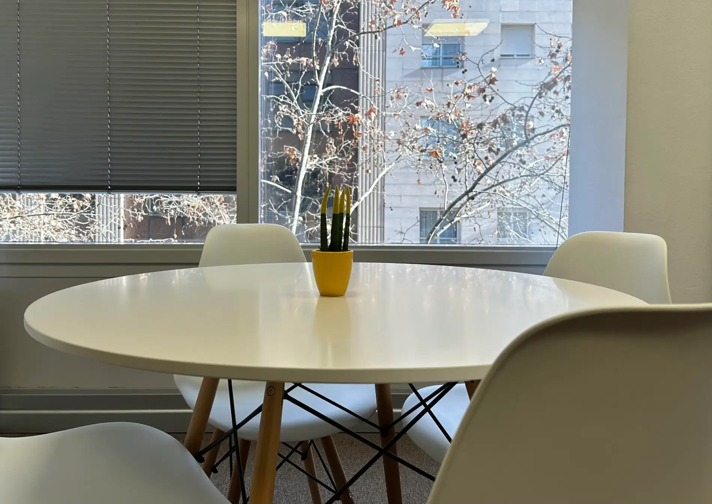
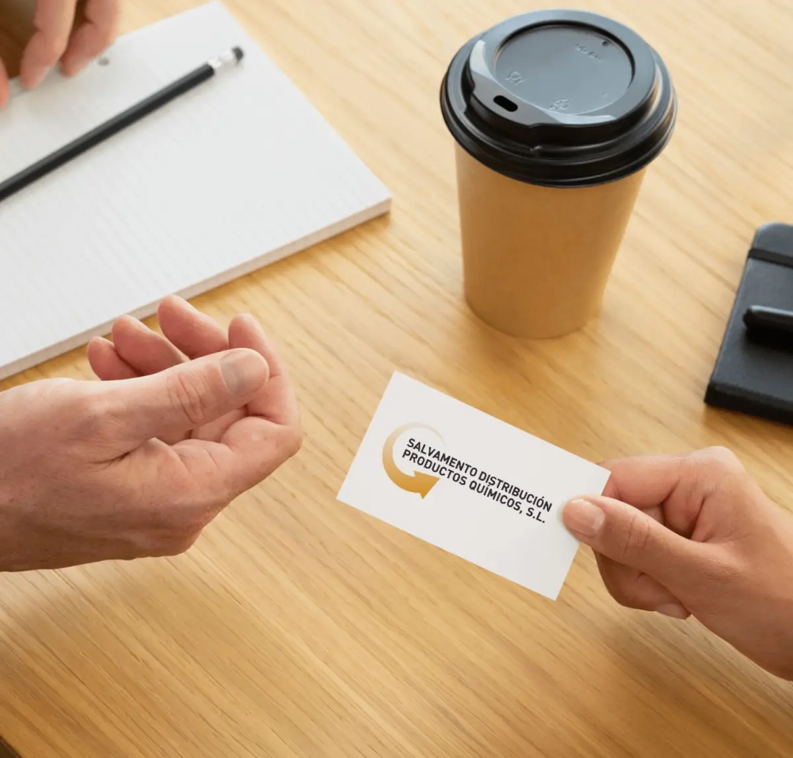
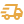

Misión
Ofrecer soluciones ágiles, seguras y personalizadas para la recuperación y distribución de productos químicos siniestrados, garantizando profesionalidad, eficiencia y cumplimiento normativo.

En Grupo Salvadis contamos con más de 30 años de experiencia en el sector químico, agroquímico e industrial, ofreciendo soluciones seguras y sostenibles para la gestión y recuperación de productos químicos siniestrados o fuera de normativa.
Somos un equipo de profesionales altamente cualificados en seguridad, salud ambiental y economía circular, comprometidos con la trazabilidad, la eficiencia y el cumplimiento legal en cada operación.

Salvadis nace de una necesidad real en la industria: dar salida a productos químicos que, por incidencias, siniestros o restricciones, ya no pueden comercializarse por los canales habituales.
Durante más de 30 años, nuestro equipo ha trabajado con mercancías obsoletas, caducadas, fuera de normativa o inmovilizadas, buscando alternativas para su recuperación, valorización o salida técnica y evitando que pierdan su valor.
Transformamos un problema en valor, reduciendo costes e impacto para fabricantes, distribuidores y operadores logísticos.
Hoy, Salvadis es sinónimo de experiencia, confianza y soluciones circulares en el sector químico e industrial.
En los últimos años, Salvadis ha ampliado su actividad más allá del ámbito nacional, consolidando una
red de distribución y comercialización en distintos países de Europa y África.
Gracias a nuestra experiencia en la gestión de productos siniestrados y mercancías industriales,
así como a la colaboración con operadores logísticos y almacenes especializados, desarrollamos
operaciones nacionales e internacionales con total seguridad, control y trazabilidad.
Nuestra presencia en mercados europeos y africanos nos permite ofrecer soluciones ágiles,
conectar oferta y demanda en distintos entornos y aportar valor a aseguradoras, peritos,
distribuidores y empresas industriales.

Ofrecer soluciones ágiles, seguras y personalizadas para la recuperación y distribución de productos químicos siniestrados, garantizando profesionalidad, eficiencia y cumplimiento normativo.
Ser un referente en el sector químico industrial, reconocido por nuestro compromiso con la economía circular, la trazabilidad y la calidad técnica del servicio.
Confianza, especialización, agilidad y compromiso. Trabajamos con transparencia, un equipo técnico altamente cualificado, capacidad de respuesta rápida y foco en sostenibilidad y normativa.
Experiencia en productos peligrosos, corrosivos y de alto riesgo

Capacidad operativa inmediata ante emergencias logísticas o medioambientales
Cumplimos CLP, ADR y toda normativa europea
Cobertura en toda España y conexión con colaboradores europeos
Controles rigurosos desde el origen hasta la entrega
Colaboración en sectores como pharma, agro y automoción
En Salvadis trabajamos cada día para garantizar procesos seguros, responsables y sostenibles en la recuperación y distribución de productos químicos industriales.
Contacta con nuestros expertos y descubre cómo podemos ayudarte a optimizar la gestión química cumpliendo los más altos estándares técnicos, medioambientales y normativos
Solicita asesoramiento arrow_outward